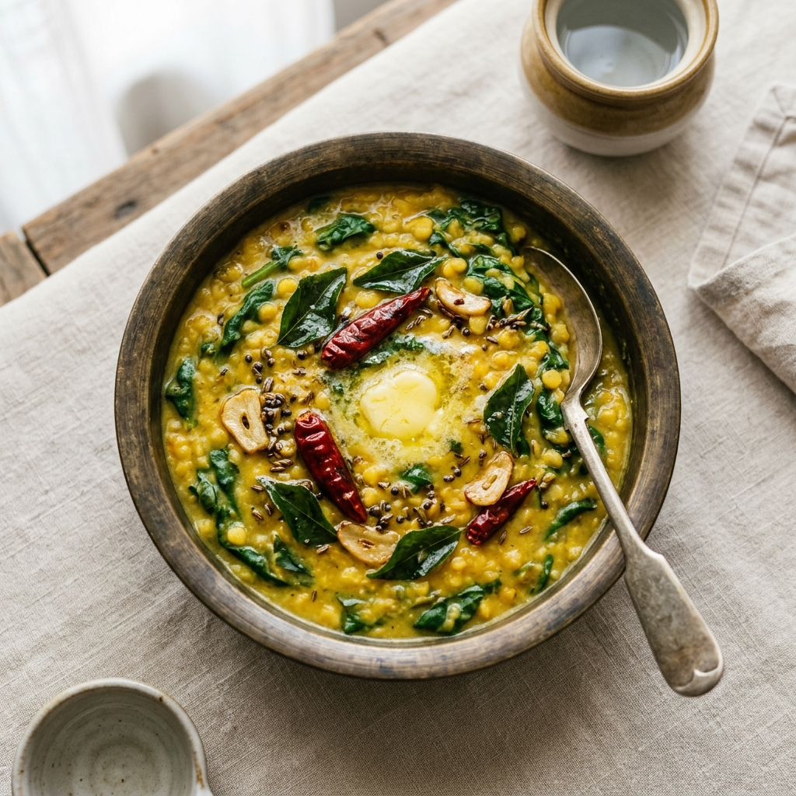

South Indian
Palakura Pappu (With Ground Spice Paste)
A classic, rich, and aromatic South Indian spinach dal made with a freshly ground spice paste of garlic, cumin, and dried red chilies. Hearty, healthy, and highly comforting.
Prep Time
15 mins
Cook Time
25 mins
Total Time
40 mins
Servings
3–4
Instructions
- Cook the dal: Pressure cook the toor dal with 1½ glasses of water, turmeric, a few curry leaves, and 1 tsp of oil for 3 whistles until soft and mushy.
- Grind the spice paste: Dry-grind the garlic cloves, dried red chilies, and cumin seeds into a coarse paste without adding too much water.
- Heat the oil and temper: Heat 2 tbsp oil in a pan. Add the mustard seeds, cumin seeds, dried red chilies, a pinch of hing, and curry leaves. Let them splutter.
- Sauté onions: Add the chopped onion and sauté until they become soft and translucent.
- Wilt the spinach: Add the chopped spinach to the pan and cook until it is completely wilted.
- Cook the paste: Stir in the coarsely ground garlic-chili paste and cook for 2–3 minutes to remove the raw smell.
- Combine dal and simmer: Add salt and the cooked toor dal to the pan. Mix well.
- Add tamarind: Pour in the tamarind juice and simmer the dal on low heat for about 7 minutes to let all the flavors meld together.
- Finish: Stir in 1 tbsp of ghee, turn off the heat, and serve hot.